Super Television by Orange (August 1996).
DEMO.EXE is PMODE/W 1.20 + Watcom C (32-bit flat),
DATA.DAT is 29 chunks (re/assets/00..27.bin;
the RIX3 pictures are converted to re/assets/png/), the
music is MAKAKO.S3M (251 s). The original wants a GUS or a
Sound Blaster. Names of the effects below are descriptive
only: no credit text was read from the program. Everything here
comes from web/fx/*.js, re/NOTES.md and the
disassembly (re/emu.py + re/fx_oracle.py run
the original under Unicorn; the asm write-up has the listings).
The port has the same shape for every effect:
render(t, ctx) fills ctx.idx (320x200 palette
indices) and ctx.pal (768 bytes), t = music
seconds since the start of effect 0 (web/fx/common.js). It
shows the indexed frame in a 4:3 box (pixels are not square; effect 9 is
320x400 and is shown in the same 4:3 box).
Reference = the original run under Unicorn with a virtual clock and
no sound card (re/fx_oracle.py: hooks before the render
call and after the VRAM/DAC write, one snapshot per frame). "Exact"
below means 0 differing pixels in palette-index space on the
oracle frames (given the per-frame state the check feeds).
| fx | pixels | palette | what is NOT derived |
|---|---|---|---|
| 0 | 2822 of 2824 oracle frames (0 differing); 1922 frames without an ISR tick between two passes: pixels and palette | +-1 on 389 of 902 ticked frames, UNRESOLVED | the 2 other frames are a music row/order change inside one render (harness updates the row per 20000-instruction chunk; frame 1453 unexplained); entry tick count NINIT=15 and pace are harness values |
| 1 | 0 bad pixels on the 240 frames with a clean snapshot (326 had an ISR tick inside the table build, skipped, not claimed) | exact on 434 frames without a tick before the DAC load | entry (derived from fx0's ISR, sub-tick phase not), pace (1 vsync/frame assumed) |
| 2 | 0 differing pixels, 0 differing palette bytes on 222 frames (given its state) | exact | the t -> tick mapping (entry = exit of fx1, machine dependent), +-1 tick |
| 3, 8 | 0 differing pixels (fx3 875 frames, fx8 852) | exact on frames without a tick during the pass | NINIT (fx3 8), EXIT (fx8 8): harness measurements |
| 4 | 0 differing pixels on 223 clean frames (the first 40 are skipped, see 4.5) | 0 bad on 273 frames | start-up tick (1) and ticks per pass (TPF=3): harness |
| 5 | 0 differing pixels on all 1135 frames | 0 bad frames | ticks per pass (2, first pass at tick 12): about 60 % of frames are exact end to end |
| 6, 7, 12 | 0 differing pixels (about 120 frames each) | within one fade step (vsync phase unknown) | emulator vsync phase |
| 9 | 0 differing, frames 0..347 of 350 | exact | frame rate (13 fps is a free choice), entry |
| 10 | 0 differing on 1400 frames | within +0..5 ticks on 1394 of 1400 | entry (order 31 row 0) and frame rate (35 fps, free choice) |
| 11 | 0 differing on 76 frames, palette too | static | n -> time mapping (entry = start of order 35) |
Clock facts that apply to all of them (re/NOTES.md,
"Original player clock"): the effects pace on vsync
(port 0x3da) and on a 70.0027 Hz PIT tick (divisor
0x4295 = 17045); the music is driven by the sound card
clock in the original (0x3dde9), not by the PIT.
The phase between those two clocks is machine dependent, so the "pacing"
constants (NINIT, EXIT, TPF, FPS) are measured on the emulator,
not derived. The timeline stays on libopenmpt row times
(web/fx/timeline.js) because that is the audio the browser
plays; the original's own clock would put row starts up to 0.14 s later
at the end.
0x3d980 keeps the order in [0x44505], the
row in [0x44504]; effects wait on
cmp [0x44505],N and flash/fade on rows. The port reads
timeline.js (libopenmpt row start times of all 2400 rows)
so seek = set the time and re-render.0x1c2c8..0x1c449), counters restart at the
entry. The scenes are functions of (tick count, music row) plus a few
accumulations per rendered frame.sar 8, clamp 63) is used by all effects (asm 11); the flash
is "set the fade to 0x180 on a row, then subtract per tick/vsync".Music time since the start of effect 0 (= start of the demo); orders
from re/NOTES.md.
| fx | time | orders | what you see (descriptive) | chunks |
|---|---|---|---|---|
| 0 | 0 - 59.7 s | 0 - 8 | noise/zoom texture fading in, warped texture sprites, a picture sequence (orders 5-7), flashes | 16,3,4,0,1 |
| 1 | 59.7 - 76 | 8 - 10 | green "eye" disc with the SUPER television corner logo | 8,4,9 |
| 2 | 76 - 89.7 | 10 - 13 | big "TV" logo seen through a lens | 6,7,2 |
| 3 | 89.7 - 102.3 | 13 - 15 | flat-shaded purple/white abstract image, upscaled 8x | 13,22,23 |
| 4 | 102.3 - 115.1 | 15 - 17 | orange TV logo, distortion with feedback | 14,15 |
| 5 | 115 - 144 | 17 - 21 | bump-mapped spinning ball, then a picture | 5,11,10,17,21 |
| 6 | 144 - 153 | 21 - 23 | Bob Marley picture, flashes on rows | 24 |
| 7 | 153 - 159 | 23 - 24 | flag/palm picture, flashes on rows | 25 |
| 8 | 159 - 175 | 24 - 26 | swirl/zoom (the fx3 engine with other pictures) | 22,23 |
| 9 | 175 - 202 | 26 - 31 | coloured TV static, 160x120 RGB triplets | 18 |
| 10 | 202 - 230 | 31 - 35 | warped organic texture with a bump look | 19,20 |
| 11 | 230 - 244 | 35 - 37 | same texture in sepia, scrolling text strip | 20,27 |
| 12 | 244 - 252 | 37 - 39 | Marilyn portrait, fade-out, the demo ends (exit code 2) | 26 |
One loop pass per vertical retrace (poll at 0x45dd1). A
pass is: palette (cross-fade of 4 six-bit palette sets
by two weights, scaled by several fade variables),
render (0x4507a), page
flip (3 pages at 0, 0x5355, 0xa6aa; CRTC start = page just
drawn), DAC upload. The render has three layers:
0x46603): a 40x25 grid;
each cell value is a crossfade
(PIC16[i]*b68 + N[i]*b64) >> 11 (clamped to 63) of
the picture animation (chunk 16, RLE decoded to 300 pictures of 40x25)
and a smoothed noise buffer
N[i] = ((rnd&0x3f) + 3*N[i]) >> 2 refreshed every
pass from a tiny PRNG; b64 counts down from 0x800 and
b68 up, so the noise fades into the pictures. Each cell is
drawn as an 8x8 bilinear patch from its four corner
values (asm 7; same routine family as fx3).0x45136..0x452aa, 4 plane passes at 0x452ee):
separable, pixel = tex[X[x] + Y[y]] with
X[320] (columns) and Y[200] (rows, already
x320) rebuilt every pass as clamped 16.16 ramps (asm 9); index 0 of the
texture is transparent. Order 3 swaps the two texture buffers on a PRNG
and from row 0x1f makes the zoom accelerate; at the b78
wrap (0x1400000) both textures are cleared.0x550e9/0x551e9/0x552e9 by row & 63) are
copied to rows 50..149, 0 transparent.const m=(i)=>{const v=(Math.imul(PIC16[s+i],S.b68)+Math.imul(N[k+i],S.b64))>>11;return v>0x3f?0x3f:v}; // fx00.js noise()
N[i]=((eax&0x3f)+N[i]*3)>>2;eax=(eax+0x9d)|0;eax=(eax<<11)|(eax>>>21);eax^=0x9d; // the PRNGThe palette brightness of orders 5-7 is modulated by
(SIN[b94]>>4)+0x100. The loop ends after the pass
where [0x4dbec]==0 && [0x4dfc8]==0xff80: derived
from the ISR (it takes 115 ticks after order 8 starts),
which is how the entry of fx1 is computed (59.68 s). Status:
the ISR is ported 1:1 (isrStep, variables named by the low
digits of their addresses); render exact (see 0).
Stateful: noise buffer + PRNG + the texture clears, so
render(t) replays from pass 0 with a checkpoint every 64
passes (about 0.8 s the first time, 15-50 ms per seek). Not
derived: NINIT (15 ticks before the loop), the pace (one pass per
70.0866 Hz vsync is assumed to fit), palette +-1 on ticked frames.
Mode X, 3 pages (0, 0x7d00, 0x3e80). Two variants per two frames (A
0x46da9, B 0x46e78), each = 4 plane calls of
0x46d53 (64x100 pixels per plane, asm 1). For a pixel whose
background mask byte (chunk 4) is 0:
out = TBL[(map + S.x + T1[map>>8] + T2[map&255]) & 0xffff] // map = chunk 9 word, TBL = chunk 8 (+0x80808080 per dword)T1 and T2 are 256-entry word tables rebuilt
each frame by 0x46bf2 from four sine counters
(tab(a,b,da,db):
((SIN[b>>3]+256)>>4)<<8 | (SIN[a>>3]+256)>>4),
S.x =
(SIN[c1>>2]+SIN[c2>>2]+SIN[c3>>2])>>3
from three counters advanced by 3, 5, 7 per tick. So a fixed "map"
picture is displaced per pixel by two tables indexed by its own
bytes: the high byte picks a horizontal-ish offset, the low
byte a vertical-ish one, giving a liquid warp of one stored picture with
no per-pixel multiply. Variant A writes the pixels with x+y odd, B those
with x+y even, and the page written changes every frame, so the
**displayed page n = chunk-4 background + half of frame n-3
render
draws frame k-3's half then frame k's half). Palette: colours 0..127 =
pal0*f8>>8, 128..255 =
pal1*f4*ca>>16. The ISR (isrStep, hook
0x473ef) also sets the per-order sine steps (orders 8, 9,
10), fades in, and from order 10 row 47 fades out by 6 per tick: fx1
exits when the fade reaches 0 (43 ticks).
Status: pixels exact on clean snapshots; entry derived (fx0's
exit), pace 1 vsync/frame assumed. Seek: pure function
of (t, entry): stateAt replays the ISR ticks from the entry
(about 10 ms/frame).A 256x200 picture at x=48 of mode 13h. Per pixel (asm 2):
al = t1 + t2 where t1, t2 are two
bytes of a 512x512 texture (chunk 2, halved) read through two
windows whose offsets orbit on sine/cosine paths;
al then indexes a 256x256 lens table
twice,
TBL[row*256+col] = (((row-128)*(256-col))>>8)+0x80 // built at 0x476dd, 64 KB
dh = TBL[(0x1c+y)*256 + al]; dl = TBL[x*256 + al]; out = chunk7[(al>>2)*256 + chunk6[dh*256+dl]](dh, dl) is a coordinate pair into the picture
(chunk 6), so the texture sum is not shown, it bends the lookup of
the logo; the final colour goes through chunk 7 (a shade table
indexed by al>>2). Chunk 6 is indexed by its raw file
offset (header included), a quirk the port keeps (C6[...]
on the whole file, palette from C6.subarray(10,778)).
Window motion (ISR 0x4799b, 70 Hz):
A += 0x20, B += 0x1a, C += 0x18 (mod 4096);
m1 = sin[A] + 0x4c8, m2 = sin[B] + 0x4c8;
p50 = (((cos[C]*m1>>14)+128)<<9) + (sin[C]*m1>>14) + 128,
second window with C+0x800. The picture scrolls in
(off = 0xc800 - 0x500*k from order 11, 40 ticks; rows above
stay black) and fades from order 12 row 48 (-8 per tick).
Status: state = closed form of the tick count N, no
accumulation: pure f(t), seek is free. Pixels and palette exact
given (A,B,C,off,fade); N is known to +-1 tick and the entry (= fx1's
exit, 43 ticks after order 10 row 47) is derived from the code, but its
sub-tick phase is not. An older 0.02 s lead fit was removed.
swirl.js) - the 40x25 flat swirlThe picture is not computed: chunk 13 is RLE decoded
(0x48d29: b&0xc0 == 0xc0 -> repeat
b&0x3f times the next byte) to exactly
0x493e0 bytes = 300 images of 40x25 (1000
bytes). The ISR advances an offset by 1000 (every speed-th
tick for fx3), so the demo plays a 300-frame animation stored at 40x25.
Each frame is upscaled 8x with bilinear interpolation
by 0x48d63/0x48e0e (asm 7): 39x24 cells, each cell 8x8
pixels from its four corner bytes in 8.8 fixed point, written two planes
at a time (plane masks 5, then 0xa, rows 0-7 then 3-10, so the pixel
lattice is a quincunx), then the borders cleared.
swirl.js draw() reproduces the VRAM writes literally on a
4-plane array.
Palette: 128 static colours (0x5d952) + 128 mixed from
two of four 0x300-byte tables by weights w1 (-4/tick) and
w2 (+4/tick); after 64 ticks the pair index (6 pairs)
advances, so the colours cross-fade between table pairs
forever; everything is scaled by
f2c2*f2a6*f483>>16 (fade-in +8/tick, flash 0x1c0 on
rows R3 decaying 8/tick, fade-out 4/tick from the last order). The loop
leaves when the fade hits 0 or at order 15. Status: pixels
exact (875 frames), ISR counters exact on all snapshots; the
music-driven flash/fade values were first reported wrong on 434
snapshots, which turned out to be a checker artifact (one row per frame
fed to three ticks): fed the exact row of each tick
(IRQLOG) they are 0 wrong. Not derived: NINIT=8
start-up ticks (RLE decode etc.), sub-frame phase.
Seek: pure f(t), ISR state replayed from the entry
(about 1 ms/frame).
Mode 13h. A 320x200 buffer T (the feedback state,
initialised to chunk 14) is displaced every frame and mixed back into
itself. Two offset tables, H[320] and V[200],
are built each frame (0x48f1a) from four ISR sine counters
(A += 9, B -= 38, C -= 26, D += 25) and an amplitude
(SIN[E]+0x5dc)>>1; the displacement is separable
(D[y*320+x] = T[V[y] + H[x]], port tables()),
then T = (3*D + C) >> 2 per byte (C
= chunk 14, constant) so the picture keeps being pulled back to the
original, and the VRAM byte is
((T>>2) & 15) | chunk15 << 4 (asm 4). The
palette is a 16x16 construction:
out[o*16+i] = ((P2[i]*F>>8)*9 + P1[o]*6)>>3 (<=63) * F>>8,
o = the chunk-15 pixel (high nibble), i = the
feedback level (low nibble), so the feedback buffer is only a
brightness ramp on top of a 16-colour picture. Fade +8/tick in order 15,
-8/tick from order 16 row 0x30. Status: pixels exact on 223
compared frames, palette on 273, ISR counters on 1180 snapshots. The
feedback error decays by 3/4 per frame, so a seek replays from
the first frame (stateful, cached, 0.3-2 ms/frame); the oracle
run needed NOIRQ over the table build (ticks injected
inside it mixed two states), which is why the first 40 frames are not
compared. Not derived: NINIT=1 and TPF=3 ticks per pass (270 of
294 passes in the harness; 2: 13, 4: 11) = 23.4 fps, machine speed.
A height-map bump mapping on a 160x100 grid, blitted
as 2x2 quincunx blocks to mode 13h. Setup
(0x4968e..0x497d5, once):
h[i] = TBL[(r+g+b) & 255] of the palette
entry of picture pixel i (chunk 10): the heights come from the
colours' brightness;byte = (sum of 4 neighbours >> 2) & 0x3f (asm
3);D[i] = ((h[i-1]-h[i+1])<<2) & 255 | ((h[i-256]-h[i+256])<<2)<<8:
the slope as a 2D offset.Per frame (0x49552, asm 3): for grid pixel i,
w = chunk 5 word, dx = w + OFF (16 bit),
cl = chunk10[dx] (the texture colour),
bp = w + D[dx], ch = chunk17[bp] (the lit
shade), out = chunk11[ch<<8 | cl]:
for(let i=0;i<16000;i++){const w=W5[i],dx=(w+off)&0xffff;out[i]=T11[(I17[(w+D[dx])&0xffff]<<8)|I10[dx]]} // fx05.js ball()w is the screen->(u,v) mapping of a sphere
(precomputed, chunk 5), OFF scrolls the texture under it
(spin); the slope D displaces the lookup into a
light map (chunk 17), and chunk 11 is the shade table. The ISR
(0x49adf) integrates OFF from per-order
parameters (table 0x607aa, 20 bytes per order) cross-faded
over 256 ticks after an order change; flashes on rows 2, 5, 0x21, 0x24,
0x27, 0x3f set the fade to 0x180 and it decays by 4. At order 21 row 2
an overlay (chunk 21, index 0xf0 transparent) is composited and 256 fade
frames (one per vsync) end the effect. Status: pixels exact on
all 1135 frames, palette on all, ISR counters exact. The setup tables
are verified through the pixels (every pixel goes
through D). The 16-bit dword reads of the blur at offsets 0xffff/0xfffd
read 3/1 bytes beyond the 64K block; in the harness those bytes are 0
and the port uses 0 (XT) - on a real PC they are whatever
the allocator left: UNRESOLVED (corner pixels only). Not
derived: the tick count per pass (first pass at tick 12, then 2 per
pass, drifting -1 tick per ~400 passes: about 60 % of frames exact end
to end); the fade frames: the harness drops ticks during vsync waits,
the port uses one frame per vsync. Seek: pure f(t), ISR
replayed from the entry.
A RIX3 picture is copied to VRAM once, with a black
palette. Then every vsync the loop polls the row byte; on a listed row
the fade is set to 0x180 and each vsync drops it by
16, palette = src*fade>>8 clamped to
63 (asm 11). So the picture "pops" over-bright on the beat and sinks
back to normal in 8 frames; between two flashes the fade is at its
floor, which can be 0 (a black screen, which is why a test sample at 156
s seemed blank: it lies between two flashes of fx7).
fade = Math.max(0, 0x180 - 16*(k - j0)) // k = vsync index, j0 = first vsync after the flash row (flash.js)fx6 (chunk 24) flashes on 23 rows of order 22, fx7 (chunk 25) on 18
rows of order 23. fx12 (chunk 26, the end) shows the picture at order 37
row 24 and fades it out at one step per frame (256 - m).
Status: 0 differing pixels; the palette is within one fade step
(the emulator's time quantum is 6.7 ms against a 14.3 ms vsync, so the
phase is unknowable). Seek: pure functions of t.
Effect 8 sets [5f443]=0x17 (start order),
[5f441]=0x1a (end), speed 2, chunk 23, then falls
into the same body as fx3. Differences that matter:
[0x5f487]==1 (set by fx3 at its exit) selects other ISR
branches (flash rows R8 tested only on a row change, the picture
advances every tick instead of every
speed-th); its 128 static colours are not static data but
what fx7 left at 0x5d952 (chunk 25's palette bytes
[0xa:0x18a], checked equal to the oracle dump); and the ISR
variables ([5d27a], [5d26e], weights) are
inherited from fx3's end state because
0x4856a does not reset them (the port's
carry() replays fx3 to its end, then 8 more ticks).
Status: 852 frames exact, palette on 665 frames without a tick
in the pass, counters exact. EXIT=8 ticks between fx3's last pass and
fx8's first frame is a harness measurement (UNRESOLVED). The tail at
0x48802 (final picture, needs order 25 row >= 0x3d while
the fade is still > 0) is not rendered by the port because with this
timeline the 64-tick fade ends first: not verified.
A 320x400 unchained mode shows 160x120 "pixels" of three bytes: each pixel is three scanlines using palette banks 0, 0x40, 0x80 (R, G, B ramps), doubled horizontally, 360 lines drawn. The source image is chunk 18 (57600 bytes >> 2). Per frame:
0x4a2d9,
4800 dwords) fills 19200 random bytes;{0, +-3, +-480} (table 0x6567e, copied in at
the end of each frame, so frame 0 uses zeros) into the image:
dst[i] = src[i + off] (the image diffuses,
the two buffers swap);vram = B[old - 0x40*l] + A[img] + 0x40*l (asm 6).
A = floor(j/8), B = ~0.9*k are static ramps,
so each frame the screen moves 1/9th of the way (roughly) to the new
random-shifted image: the static is the temporal low-pass of a
randomly jittered picture.for(let i=0;i<4800;i++){R[i]=x; x=(x+y)|0; y=(y+z)|0; z=rol(z,2); y=rol(y,1); x^=z; z^=x} // fx09.js step()Fade 0x100 until order 30 row 0x30, then
0x100 - 16*(row-0x30); exit at order 31 or after 350
frames. Status: 0 differing pixels on frames 0..347 (99 dumps;
each compared with the port's frame n and n+1 because the emulator
samples mid-frame, two plane passes; 0 unexplained). Frame rate
not derived: the loop does one vsync wait per frame (<= 70
fps, CPU bound), the port uses 13 fps, chosen only so that 350 frames
span about orders 26.5-31. Seek: stateful (image + VRAM
+ LCG), replayed from frame 0 and cached (about 1 ms/frame).
chunk 19 (320x200, first 16 colours) is the height
field. Eight counters (0x6b34c.., +4 per tick from
0,1024,2048,3072,1024,2048,3072,0) move four
sampling windows on sine paths (x =
(SIN*80>>10)+80, y =
(SIN*50>>10)+50); the four dwords are added,
>>2 & 0x3f3f3f3f, giving HB
(160x100): the average of four moving crops, i.e. a slowly morphing
texture. The gradient of HB gives the bump (asm 5):
G = -(5*64*(HB[i+640]-HB[i-640])) - (HB[i+4]-HB[i-4]) as
signed bytes, i.e. -dy*320 - dx = a displacement
into chunk 20 (a second picture, 4 bit,
<<4), so the second texture is seen refracted by
the slope of the first. Pixel = HB | chunk20[s+G]: low
nibble the height, high nibble the refracted picture. The palette is the
16x16 product (pal20[r]*pal19[c]) >> 4 scaled by the
fade (+1/tick up to 256, -1... per tick from order 34 row 34), so the
two nibbles multiply as colours. 160x90 source pixels become 2x2 blocks
at y=10; each frame only writes one diagonal of the
blocks (frame parity), so the visible picture is a function of
frames k-1 and k only (render draws both). Status:
0 differing pixels on 1400 frames; palette matches within +0..5 ticks on
1394 frames (the oracle reads the palette after the render; the 6
others, fade-in near order 29, are 3-5 ticks ahead). Not
derived: the entry (the port uses order 31 row 0; in the golden run
fx9 hit its 350 frame cap and fx10 started at 189.8 s) and the frame
rate (35 fps free choice). Outside the picture (s+G out of
range) the original reads zeroed heap: the port uses 0, "to be
confirmed". Seek: 2 frames.
chunk 20 (picture, its own palette, no fade) with chunk 27 (a 320x600
text strip) over it. Every frame copies 64000 pixels: the strip pixel at
offset (n>>1)*320 + i if non zero, else the picture
pixel (asm 12): a scroll of one line every two ticks,
35 lines/s. n = [0x5f498], +1 per tick of the
ISR installed at entry; no cap in the original (past the strip's end it
reads zeroed heap, port: 0, to be confirmed). The loop ends at order 37
(cmp [0x44505],0x25). Status: pure f(n), 76 frames
+ palette exact; n = floor((t - at(35,0))*TICK_HZ) (entry =
fx10 leaves at order 35; fx10's latency and the PIT phase are not
derivable).
Container. All art is in DATA.DAT: 29
dword offsets (at 0x4dad8 in the unpacked image, relative
to the end of the file) delimit the chunks; the program reads the whole
file into memory once (0x44cc4) and each effect calls
0x44c9a(chunk, dest), which is just a memcpy of chunk N.
re/assets/NN.bin = the chunks as extracted (28 files,
00..27, listed here; the table in re/NOTES.md says 29
dwords). Which chunk goes to which effect is the
(chunk, dest) list at the end of
re/golden/log.txt (recorded by hooking
0x44c9a).
Formats (verified on the files).
'RIX3', w
(u16), h (u16), flag byte (175 in every file), 768-byte
palette of 6-bit VGA values at +10, then 8-bit palette
indices at +0x30a. The port reads them with rix()
(web/fx/common.js); re/assets/png/*.png are
conversions, copied to figures/ here.b & 0xc0 == 0xc0 = repeat the next byte
b & 0x3f times, else literal (decoders
0x46585, 0x465c9, 0x48d29; port
rle() in swirl.js, fx00.js).
Chunk 3 holds 31 pictures of 0x7d00 = 32000 bytes (320x100), each with
an 0x80-byte header before and 0x301 bytes after it; chunks 13, 16 and
23 decode to exactly 0x493e0 bytes = 300 images of
40x25.| chunk | size (bytes) | what it is (verified) | used by |
|---|---|---|---|
| 0, 1 | 64000 each | raw 320x200, values 0..19 / 0..15: the two texture buffers (A, B) of the warp | fx0 |
| 2 | 262144 | raw 512x512, values up to 215: the texture of the lens windows (halved when loaded) | fx2 |
| 3 | 94299 | RLE, 31 pictures 320x100 | fx0 (orders 4-7) |
| 4 | 64000 | raw 320x200, values 0..63: fx1 background/mask, fx0 "final picture" buffer (0xf2300) | fx0, fx1 |
| 5 | 32000 | 16000 words = 160x100 sphere mapping (screen -> (u,v)) | fx5 |
| 6 | 66314 | RIX3 256x256, 256 colours: the "TV" logo picture and its palette | fx2 |
| 7, 8, 11 | 65536 each | 64 KB tables: shade/lookup (7:
(al>>2)<<8 + colour; 8: fx1's colour table; 11:
fx5's `ch<<8 |
cl` shade table) |
| 9 | 102400 | 51200 words: the "map" picture of the eye disc | fx1 |
| 10 | 66314 | RIX3 256x256, 231 colours: texture/height source of the ball | fx5 |
| 13, 23 | 181307 / 281894 | RLE, 300 images of 40x25 each | fx3 (13), fx8 (23) |
| 14 | 64000 | raw 320x200, values 0..63 (6-bit): the picture the feedback is pulled back to | fx4 |
| 15 | 64778 | RIX3 320x200, 16 colours: the orange TV logo layer (high nibble) | fx4 |
| 16 | 199668 | RLE, 300 images of 40x25 (noise-crossfade animation) | fx0 |
| 17 | 66314 | RIX3 256x256, 63 colours: light map | fx5 |
| 18 | 57600 | raw 160x120 x 3 bytes (R,G,B), shown >>2 |
fx9 |
| 19, 20 | 64778 each | RIX3 320x200, 16 colours each (height texture, refracted picture); 20 also the fx11 background | fx10, fx11 |
| 21 | 64778 | RIX3 320x200, 16 colours: overlay (index 0xf0 transparent), 16 palette entries put at 240..255 | fx5 |
| 22 | 64778 | RIX3 320x200, 16 colours (a figure on black, see below); loaded by
the fx3/fx8 code, not read by the port (the swirl
colours come from fx03.bin/chunk 25) |
fx3, fx8 (harness log) |
| 24 | 64778 | RIX3 320x200, 61 colours | fx6 |
| 25 | 64778 | RIX3 320x200, 118 colours; its palette also colours fx8's static half | fx7, fx8 |
| 26 | 64778 | RIX3 320x200, 15 distinct pixel values | fx12 |
| 27 | 192778 | RIX3 320x600, 4 colours: the text strip | fx11 |
| 12 | 64000 | raw 320x200, values 0..15, looks like an eye/iris; not loaded by any effect in the harness log | none seen |
Previews (extracted with the palette of the file; raw chunks drawn as stretched grey values, not their real colours):
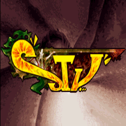
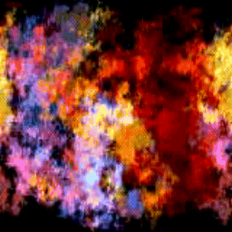
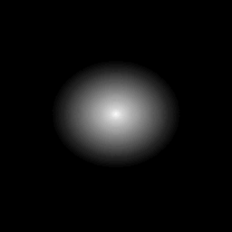
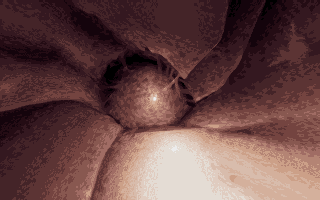
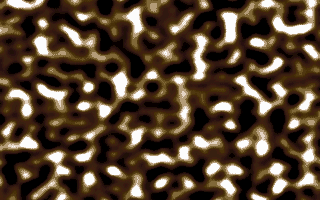
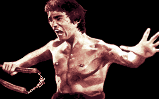
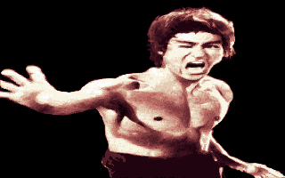
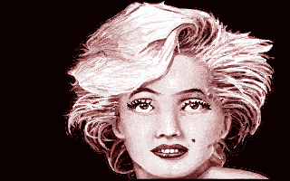
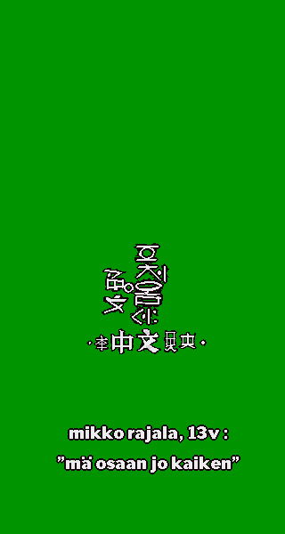
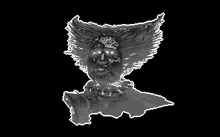
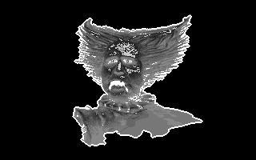
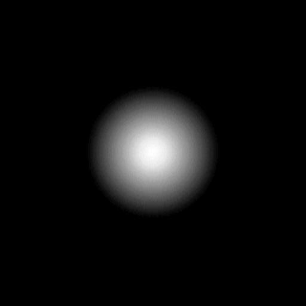
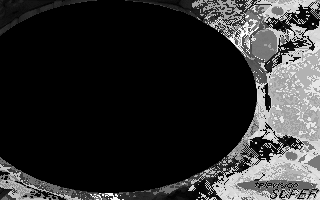
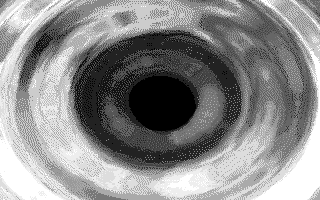
Sprites, fonts, 3D. There is no font file
and no sprite sheet: text and logos are pixels inside the
pictures (the fx11 text is the 4-colour 320x600 strip, chunk 27; the
intro's sprites are the pictures of chunk 3 and the textures 0/1, drawn
with index 0 as transparent). There is no 3D model or mesh data
in DATA.DAT: every chunk above is a picture, a
table or an animation, and the engine code has no vertex loop; the depth
impression of the ball (fx5), lens (fx2) and bumps (fx10) comes from
tables and the slope of a height map (sections 3.2, 3.5, 3.9).
(anim2.dat and tnldata.dat are named in the
binary but never opened in the harness run; their content is
unknown.)
dx/ax/cx
that holds the index leaves the high 16 bits as the table base, so
lookups wrap for free and need no and (fx1, fx2, fx5; asm
1-3).ch:cl, ah:al,
dh:dl); shading, lens, blending are lookups (fx2,
fx5).& 0x3f3f3f3f masks: the blur of fx5, the feedback of
fx4, the 4-window sum of fx10 (asm 3-5).X[320] and Y[200] offset tables per frame; one
add per pixel.DEMO.EXE is PMODE/W 1.20 (entry 0x59):
re/unpack_pmodew.py (ENTRY=0x59) runs the stub
under Unicorn and dumps the 64 MB guest memory
(re/mem.bin.gz);
re/image.bin/re/low.bin are slices (linear
0x100000.. and 0x10000..), re/image.dis is an objdump of
the first.re/emu.py boots the real program with host-side
DOS/DPMI/VGA (planar shadow, sequencer/CRTC/GC, DAC) and a virtual clock
(instructions/IPS, warped on port 0x3da polls); IRQ0 is injected every
20000 instructions at the PIT rate. rep outsb DAC uploads
(28 sites) are patched because Unicorn cannot hook OUTS.re/golden_run.py runs the whole demo once with the S3M
variables written from s3mtime.json (the sound card is
disabled: flag [0x4dacc] cleared at 0x1c2b8) and saves
reference pictures (re/golden/contact.png);
re/fx_oracle.py is the generic per-frame oracle (hooks,
state, IRQLOG) behind the checks in
tools/*check.mjs.web/fx/fxNN.js (variables named by the address's
low digits), diff in index space (tools/fxdiff.py) with the
exact per-tick music row.data.dat is 29 dwords of offsets (0x4dad8) +
raw chunks (0x44c9a(chunk, dest) is a memcpy); RIX3 =
'RIX3', w, h, flag, 768-byte 6-bit palette, 8-bit pixels
(pixels at +0x30a).